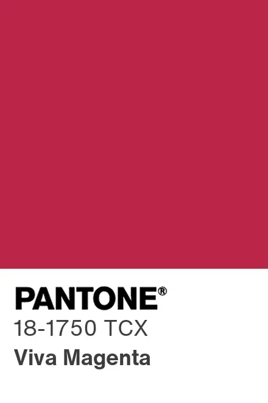
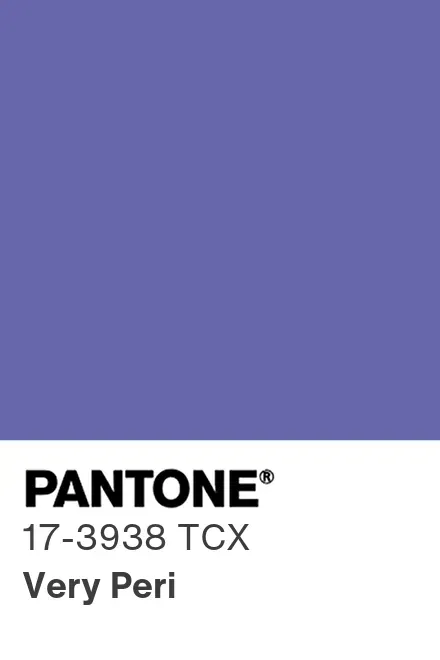
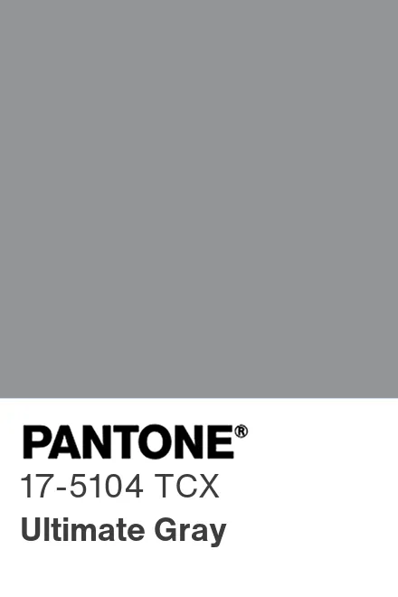

Kim jest Pantone i jak wybiera Kolor Roku?
Instytut Koloru Pantone to amerykańska wyrocznia w świecie barw, znana na całym świecie ze swojego unikalnego systemu identyfikacji kolorów. Co roku zespół międzynarodowych ekspertów przeczesuje świat w poszukiwaniu nowych wpływów kolorystycznych, aby wybrać ten jeden, najważniejszy odcień.
Proces ten wymaga głębokiej analizy i obserwacji globalnych trendów. Eksperci Pantone biorą pod uwagę m.in. przemysł rozrywkowy, kolekcje mody, dzieła sztuki, popularne cele podróży, a także styl życia ludzi, warunki społeczno-gospodarcze, nowe technologie, a nawet nadchodzące wydarzenia sportowe o randze światowej.
Wybrany Kolor Roku staje się drogowskazem dla projektantów ubrań, architektów wnętrz, producentów kosmetyków oraz projektantów graficznych na całym świecie. Wpływa na decyzje zakupowe w wielu branżach i odzwierciedla to, czego ludzkość w danym momencie najbardziej potrzebuje.
Podróż w czasie: Kolory ostatnich lat
Zobacz, jak zmieniały się trendy i globalny nastrój w ciągu ostatnich dekad.
2026 | PANTONE 16-4427 Cyber Mint (Cyfrowa Mięta)
Świeży, chłodny odcień na styku sztuki, technologii i natury. Reprezentuje nową erę mediów cyfrowych oraz harmonijne współistnienie człowieka z wirtualną rzeczywistością. To kolor, który symbolizuje czystość kodu, cyfrowy minimalizm i nasze dążenie do zrównoważonego rozwoju w świecie zdominowanym przez technologię.
2025 | PANTONE 19-3928 Future Dusk (Zmierzch Przyszłości)
Głęboki, intrygujący fiolet z granatowymi akcentami. Oznacza czas transformacji, eksploracji nieznanego i fascynacji tym, co wirtualne. Ten mistyczny odcień idealnie oddaje moment przejścia między dniem a nocą, zacierając granice między rzeczywistością fizyczną a nieskończonymi możliwościami wyobraźni.
2024 | PANTONE 13-1023 Peach Fuzz (Aksamitna Brzoskwinia)
Ciepły, subtelny odcień, który emanuje nowoczesną elegancją i spokojem. Został wybrany, by przypominać o wartości empatii, bliskości i troski o siebie nawzajem w pędzącym świecie. Jego miękka, otulająca energia tworzy przestrzeń dla odpoczynku, współczucia i głębokich więzi międzyludzkich.
2023 | PANTONE 18-1750 Viva Magenta (Niepokorna Magenta)

Odważna, pulsująca czerwień zakorzeniona w naturze. Wyraża witalność, bunt i odwagę do eksperymentowania bez ograniczeń. Ten elektryzujący kolor celebrował powrót do życia, optymizm oraz siłę twórczego wyrazu w sztuce i projektowaniu graficznym.
2022 | PANTONE 17-3938 Very Peri (Dynamiczny Barwinek)

Innowacyjny błękit z fioletowo-czerwonymi podtonami. Był to pierwszy w historii kolor stworzony przez Pantone całkowicie od podstaw, a nie wybrany z istniejącej palety. Symbolizował fuzję życia codziennego z rosnącą rolą cyfrowego świata, kreatywność oraz śmiałe patrzenie w przyszłość.
2021 | PANTONE 17-5104 Ultimate Gray (Niezawodna Szarość Świetlista Żółć)

Wyjątkowy duet dwóch niezależnych kolorów. Solidna, practical szarość połączona z radosną, optymistyczną żółcią niosła silne przesłanie po trudnym dla świata okresie. To zestawienie przypominało, że po każdej burzy wychodzi słońce, a fundamentem przyszłości jest odporność i niezachwiana nadzieja.